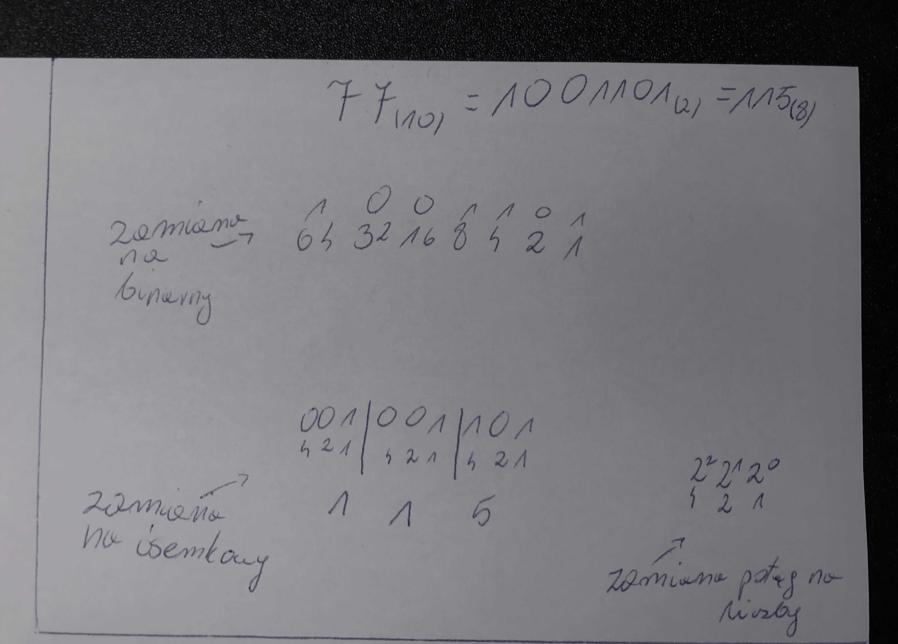
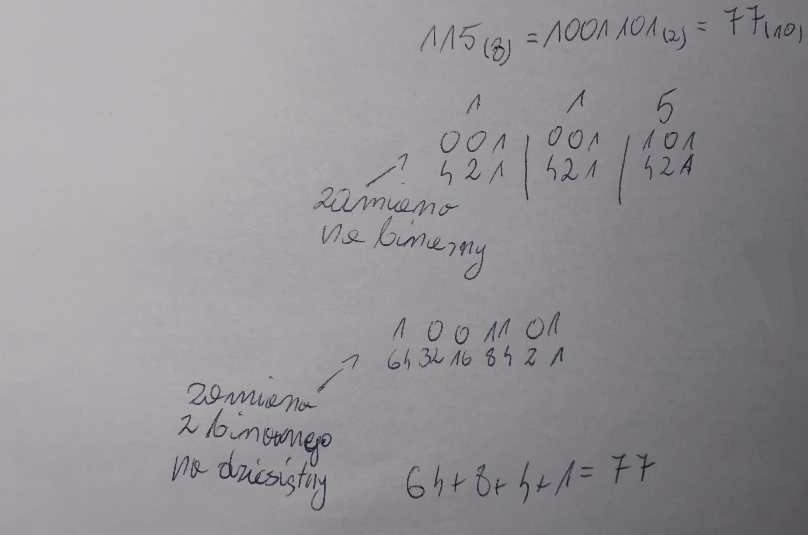

Ósemkowy
System ósemkowy jest oparty na 8 cyfrach: 0, 1, 2, 3, 4, 5, 6 i 7. Jego podstawą jest liczba 8.
przeliczanie z dziesiętnego na ósemkowy i z powrotem
Zamiana systemu dziesiętnego na ósemkowy wygląda inaczej niz zamiana poprzednich. Najpierw należy liczbę dziesiętną zamienić na binarną. Potem trzeba podzielić tą liczbę na trzycyfrowe części i tak jak w przypadku zamiany na system binarny, zaczynając od prawej strony, podpisać potęgami liczby 2. Jednakże od początku każdej części należy zaczynać potęgowanie od początku. Jeśli po lewej stronie brakuje cyfr, należy wpisać tam zera. Następnym krokiem jest dodanie do siebie wyników, tak jak w przypadku przeliczania z systemu binarnego na dziesiętny, z każdej poszczególnej części.
Aby zamienić liczbę w systemie ósemkowym na system dziesiętny należy najpierw zamienić ją na system binarny. Ponownie trzeba rozpisać trzycyfrowe części i podpisać je potęgami liczby 2. Następnie wystarczy nad każdą częścią napisać cyfrę liczby w systemie ósemkowym zaczynając od lewej strony oraz podpisać wartości. Potem należy zamienić liczbę binarną na dziesiętną i mamy zrobione :).
